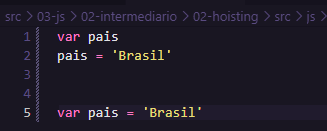
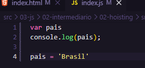
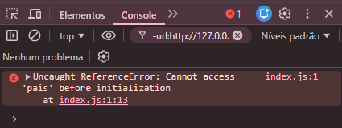

O interpretador do JS faz várias operações nos bastidores e uma delas é o Hoisting, que no português seria algo como içamento. Esse é um comportamento que acontece por de 'baixo dos panos' no JS e se não tiver ciência dele pode acabar gerando confusão e dando erros no nosso código.
A melhor maneira de pensar no comportamento das variáveis do JS é separar isso em duas partes. Uma parte é a declaração da variável e a outra é a inicilização ou atribuição da variável.
Quando fazemos:

Como na foto podemos colocar isso em duas linhas ou escrever tudo em uma linha só, mas o JS sempre ler como sendo duas instruções separadas, como está na primeira parte. Sabemos que cada variável declarada dentro de um escopo, pertence a esse escopo, mas o que devemos saber é que não importa aonde essas variáveis são declaradas dentro de um escopo, todas as declarações de variáveis são movidas para o topo desse escopo, seja global ou local. Isso é chamado de Hoisting (içamento) porque as declarações da variáveis são içadas para o topo do escopo.
O Hoisting só move a declaração das variáveis, ele não move a atribuição essa fica aonde foi atribuída. Lembrando que as variáveis não são movidas fisicamente, isso é apenas o modelo que descreve o que JS usa nos bastidores para ler isso.

Se chamar o console antes da atribuição vai da "undefined".
Vamos ver agora como isso funciona com o a variável 'let':
Quando fazemos isso com a variável let da erro de referência, isso ocorre porque as variáveis let, diferentes das declaradas com var, não podem ser lidas ou escritas até que tenham sido totalmente inicializadas e elas são totalmente inicializadas aonde elas são declaradas.
console.log(pais);
let pais = 'Brasil'

Se fizer a declaração, chamar o console e depois fizer a atribuição aí da o "undefined".
let pais
console.log(pais);
pais = 'Brasil'